mmd入门记录-一
基础入门前置（软件、插件、基本操作）
插件下载地址MMD Tools
模型下载网站模之屋
一些参考资料
MMD入门手册：零基础做出第一个自己的MMD
MMD从入门到出师系列序言 MMD超详细干货大教程！
MMD小白入门宝典
于我而言，目前就是装了blender和MMDTools插件。
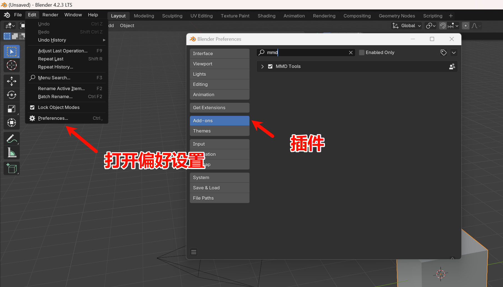
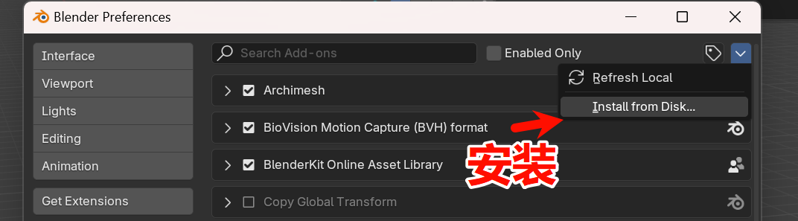
安装好了之后，右侧有个mmd的tag，点开就可以导入你的模型、动作，播放动画了

网上看到的教程开头大概都是如此的，然后就阶跃到了很深入的知识。于是我打算先试试能不能自己调调动作，摆摆样子，像是先做一个hello world一样。
graph LR
A[导入模型] --> B[镜头动画]
B --> C[人物动画]
大概就是这样，不管好不好看，先用K帧的方式自己让镜头和人物动一下
k帧是什么
Blender给镜头K动画关键帧，摄像机动画 【MMD教学】k帧教学，从零基础到进阶！小刻看了也能学会
摄像机k帧
选中摄像机， 找准摄像机位置，按i键添加关键帧 移动时间轴，调整相机位置，继续添加关键帧率 循环直到全部添加完成
graph TD
A[找准摄像机位置] --> B[按i键添加关键帧]
B --> C[移动时间轴]
C --> D[调整相机位置]
D --> E[继续添加关键帧]
E --> F{全部添加完成?}
F -- 是 --> G[结束]
F -- 否 --> C
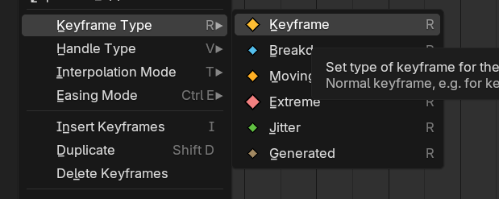

表情制作
形态键调整表情
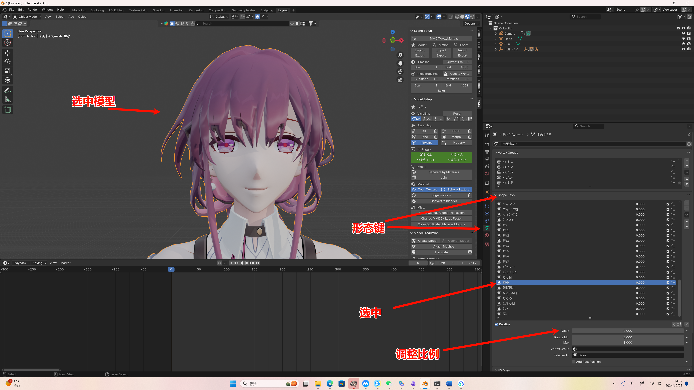
这里模型的键名都是日文，可以挨个试试看看都是对应什么表情（如果你懂日文也可以直接看），比如有认真、愤怒等等，value则是幅度，0就是没有，1就是最大，用这些value系数将这些基本表情组合起来就能得到一个新的表情。（像是线性代数里一组基构成向量）
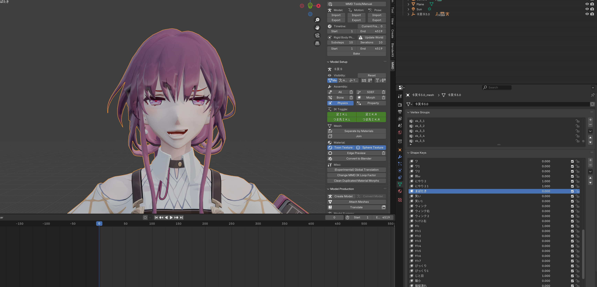 比方随便调整一下
如何添加新形态键
右下角添加，数值拉为1，此时制作的表情就是我们新的形态键的满额度表情。
进入雕刻模式，选择对应画笔开始在脸上进行调整。

动画添加
还是关键帧，按i或者点击右边的菱形都可以 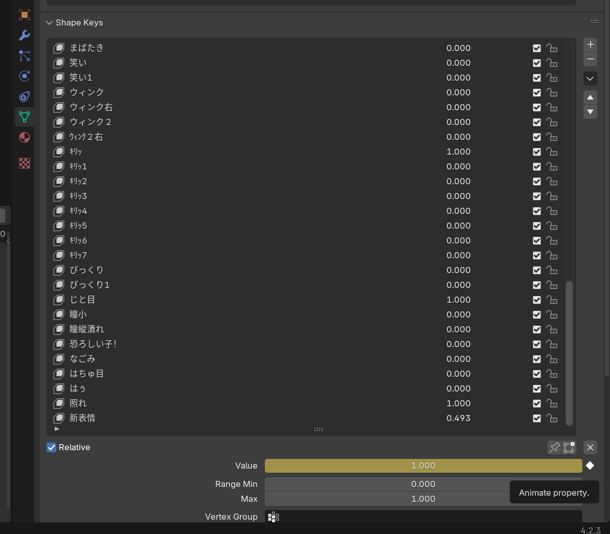 此时可以如之前的摄像机k帧一样实现表情的动画
骨骼动画
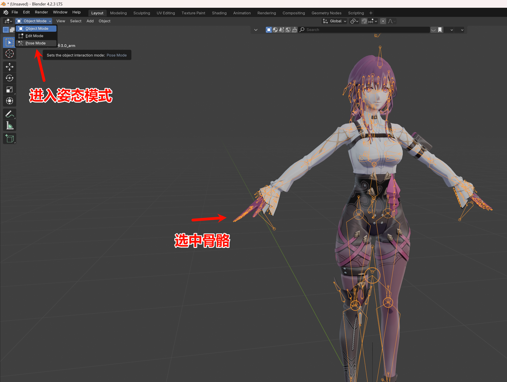 新版本骨骼层关于blender4.0的骨骼系统更新 https://www.bilibili.com/video/BV1wQ4y1477c/?spm_id_from=333.337.search-card.all.click&vd_source=1d04aeeacc3bad94c47bb6cd6817ae62)
总之现在没有骨骼层了，我们用骨骼组就好了
各层骨骼作用
头顶的骨骼同时控制两眼朝向（卡妈模型这里眼珠不动，换灵砂了），眼睛上的两个则是单独控制一只眼睛的朝向。 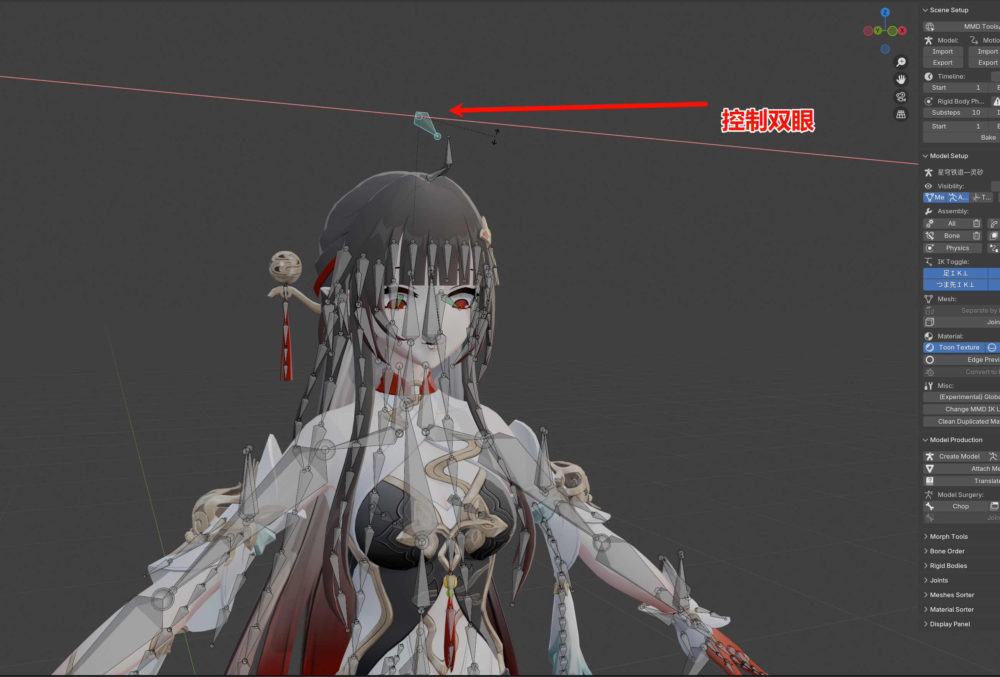
 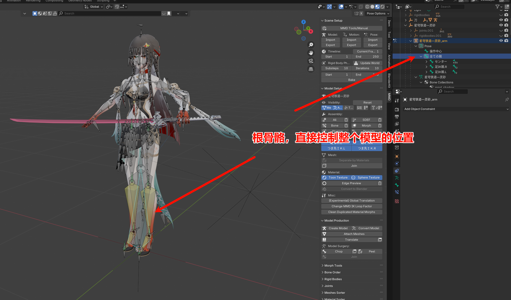
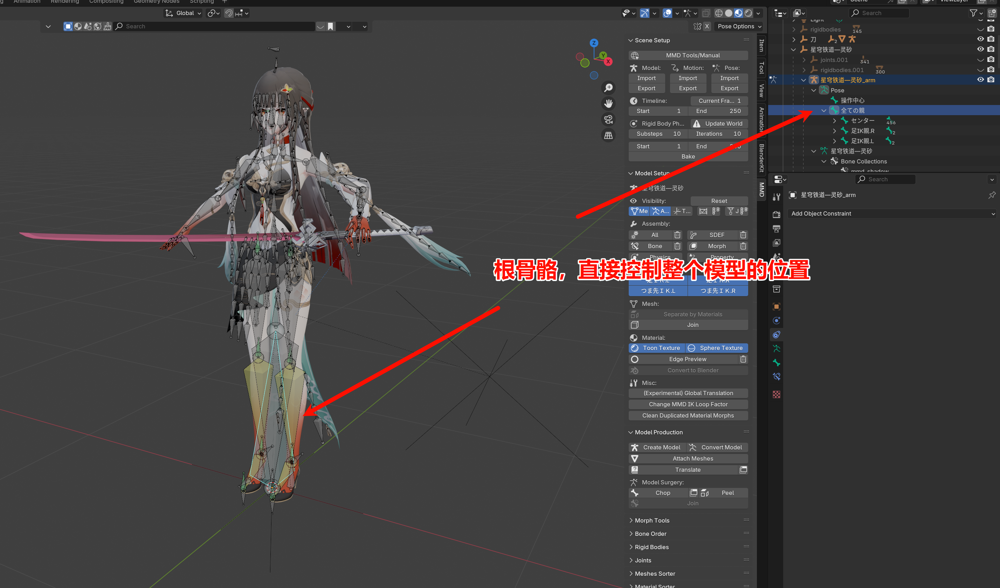
如何拿起物品
在物体模式下，选中两套骨骼

然后切换为姿态模式
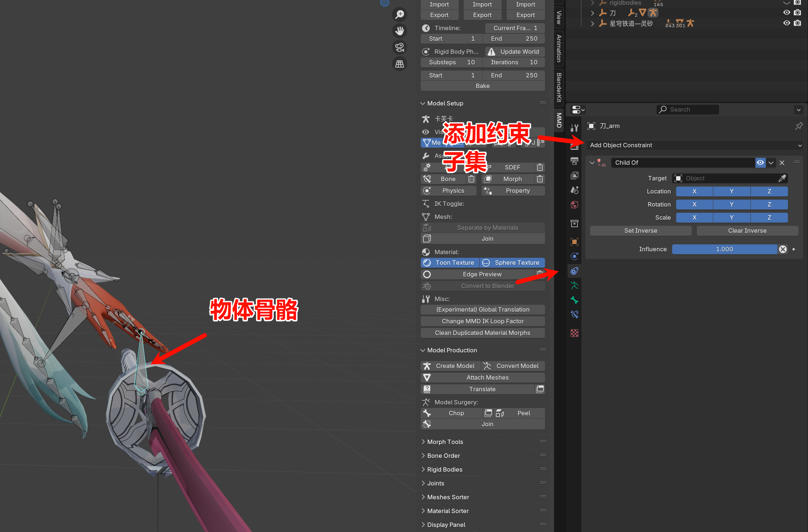
吸取人物模型

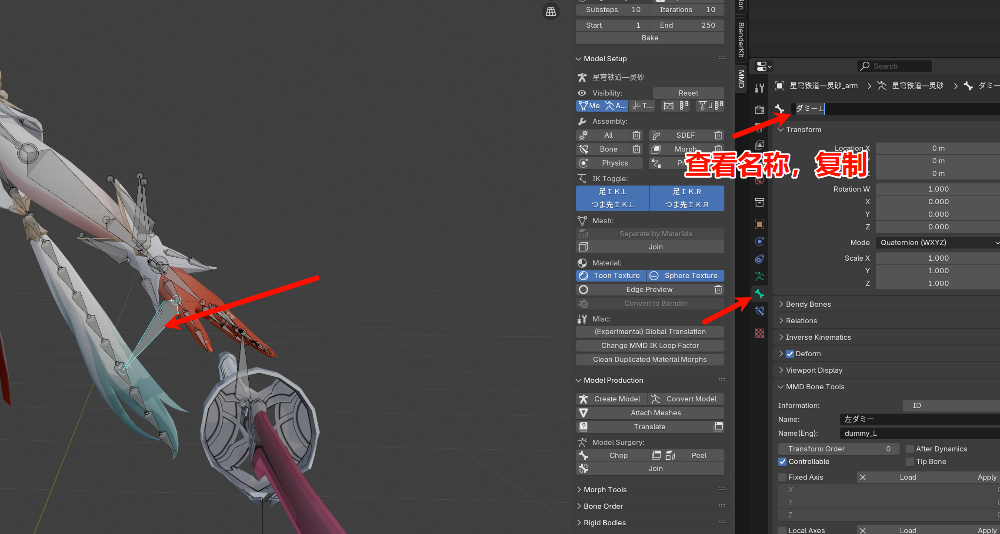
选择对应名称的骨骼
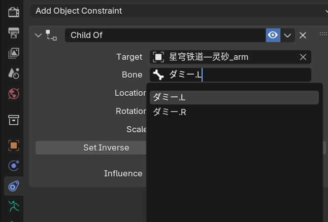
设置反向，此时物体会回到绑定前的位置 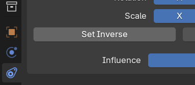
回到物体模式，调整物品位置，使其拿在手里
调整完成后切换回姿态模式，移动手臂骨骼可以看到物品随手移动
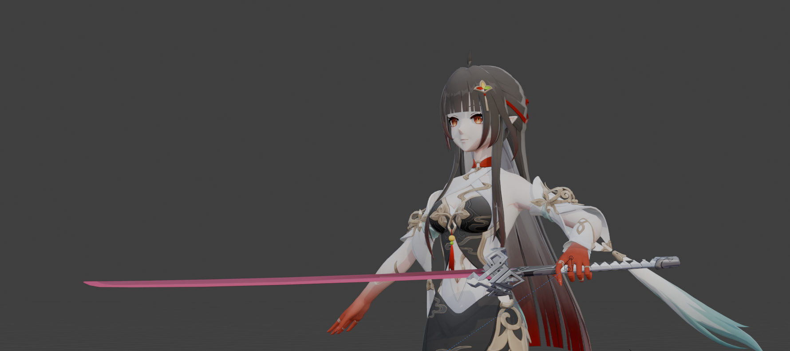
graph TD
A[物体模式] --> B[选中两套骨骼]
B --> C{切换姿态模式}
C -->|吸取人物模型| D[复制姿态]
D --> E[选择对应名称骨骼]
E --> F[设置反向]
F --> G[回到物体模式]
G --> H[调整物品位置]
H --> I{切换回姿态模式}
I --> J[移动手臂骨骼]
动力学
FK(forward kinematics)——正向动力学，调整父集带动子集，如移动大腿会带着小腿和脚丫子一块动。
IK(inforward kinematics)——反向动力学，子集带动父集，必须添加IK才能使用。
对于上半身而言，手部、手指的动作比较复杂，使用FK约束能够比较精细的对各个部位进行调节。 对于下半身而言，腿部动作简单，我们做一个踢腿动作的话，IK约束只需要移动脚部即可实现。
模之屋下载的米系模型是上半身FK约束，下半身IK约束。 所以我们在pose mode 中移动大腿根部的骨骼只能旋转，不能抬腿。需要移动脚部末端的骨骼才能调整腿部姿势。
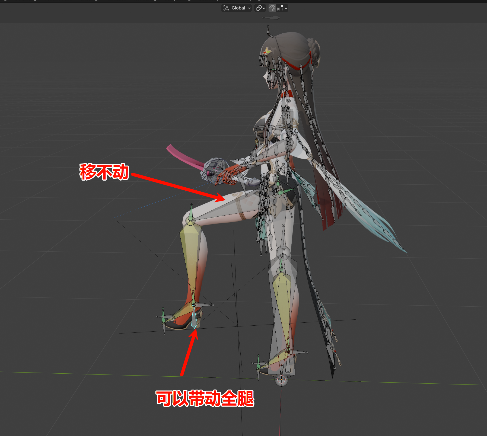
这个时候就可以简单的调整动作，然后和前面说的关键帧设置一样设置骨骼动作的关键帧，完成简单的动画了。